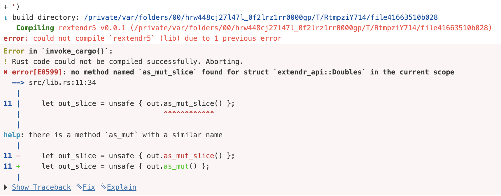

— Chambers JM (2016). Extending R.
R’s for loops are much slower compared to C++
R function calls are much slower compared to C++
R does not include many data structures compared to C++
R cannot exploit parallelism as effectively as Rust
R object memory is borrowed via C/C++ unlike Rust
R or C code debugging is more challenging than Rust
{tidyverse}rust-analyzer extension#> user system elapsed
#> 1.969 0.422 2.063#> user system elapsed
#> 1.937 0.370 2.062rextendr::rust_function("
fn signRust(x: Vec<f64>) -> Vec<Rint> {
x.into_iter()
.map(|v| {
if v > 0.0 {
Rint::from(1)
} else if v == 0.0 {
Rint::from(0)
} else {
Rint::from(-1)
}
})
.collect()
}
")
code <- '
use rayon::prelude::*;
#[extendr]
fn signRustPar(x: Vec<f64>) -> Vec<Rint> {
x.into_par_iter()
.map(|v| {
if v > 0.0 {
Rint::from(1)
} else if v == 0.0 {
Rint::from(0)
} else {
Rint::from(-1)
}
})
.collect()
}
'
rextendr::rust_source(
code = code,
dependencies = list(rayon = "1")
)sign is most performant, then C++ re-implementation is faster but Rust uses less memoryvec <- rnorm(1e7,sd = 50)
bench::mark(
signR(vec),
sign(vec),
signCfaster(vec),
signC(vec),
signRustPar(vec),
signRust(vec),
relative = TRUE
)
## A tibble: 6 × 13
# expression min median `itr/sec` mem_alloc `gc/sec` n_itr n_gc total_time
# <bch:expr> <dbl> <dbl> <dbl> <dbl> <dbl> <int> <dbl> <bch:tm>
#1 signR(vec) 98.3 83.6 1 3.00 Inf 1 34 3.84s
#2 sign(vec) 1 1 58.0 2.00 Inf 8 3 529.3ms
#3 signCfaster(vec) 1.70 1.86 44.7 2.00 Inf 6 1 514.77ms
#4 signC(vec) 3.48 2.97 26.5 2.00 Inf 4 1 578.39ms
#5 signRustPar(vec) 10.1 8.62 9.70 1 NaN 2 0 791.64ms
#6 signRust(vec) 12.7 13.3 6.29 1 NaN 2 0 1.22s#> using C++ compiler: ‘g++ (Ubuntu 13.3.0-6ubuntu2~24.04) 13.3.0’
#> g++ -std=gnu++17 -I"/opt/R/4.5.2/lib/R/include" -DNDEBUG -I"/home/runner/work/_temp/Library/Rcpp/include" -I"/tmp/RtmpqdbWeh/sourceCpp-x86_64-pc-linux-gnu-1.1.1" -I/usr/local/include -fpic -g -O2 -c file1de4260813f2.cpp -o file1de4260813f2.o
#> file1de4260813f2.cpp: In function ‘Rcpp::NumericVector signCfaster(Rcpp::NumericVector)’:
#> file1de4260813f2.cpp:12:15: error: ‘v’ was not declared in this scope
#> 12 | out[i] = (v > 0) ? 1.0 : (v == 0 ? 0.0 : -1.0);
#> | ^
#> make: *** [/opt/R/4.5.2/lib/R/etc/Makeconf:211: file1de4260813f2.o] Error 1#> Error in `sourceCpp()`:
#> ! Error 1 occurred building shared library.rextendr::rust_function('
fn signRustSlice(x: Robj) -> Robj {
// Borrow numeric slice from R (no copy)
let slice = x.as_real_slice().expect("Expected numeric vector");
let n = slice.len();
let mut out = Doubles::new(n);
// Unsafe block gives direct mutable slice (no bounds checks)
let out_slice = unsafe { out.as_mut_slice() };
for i in 0..n {
let v = slice[i];
out_slice[i] = if v.is_nan() {
f64::NAN
} else if v > 0.0 {
1.0
} else if v == 0.0 {
0.0
} else {
-1.0
};
}
out.into()
}
')
<algorithm>, in C++ files to invoke the desired extension